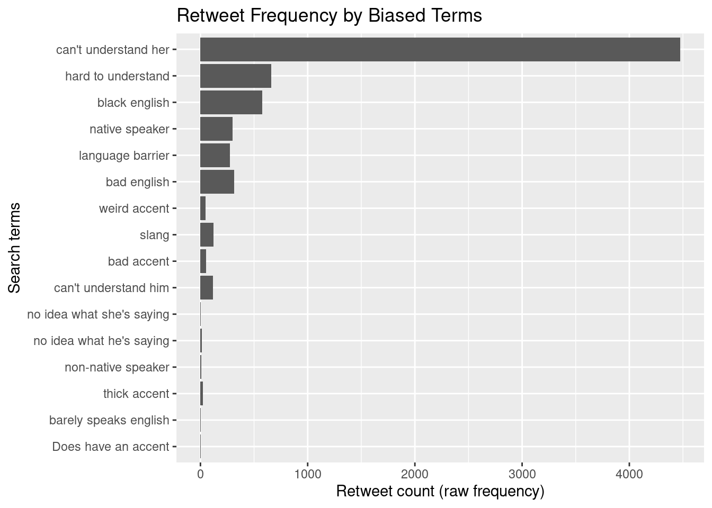

Analyze dataset
2021-12-04
About
Now that we have acquired, curated, and transformed our data, it is time to analyze it and answer the research questions. In this section, we will first look at the data set of tweets and sentiment and perform a sentiment analysis. Then we will look at our map of biased tweets and determine if there are any geographic patterns with linguistic biases.
Setup
First we need to load the necessary packages into our workspace.
library(rtweet) #for twitter data
library(tidyverse) #for data manipulation
library(readtext) #for reading the text file
library(tidytext) #for separating rows and columns
library(knitr) # for pretty tables
library(janitor) # cross tabulationsThen we need to read in our data files from the transform data step. The first one is the data table of tweets and sentiments.
sentiment_data <- readtext(file = "../data/original/tweets_words_sentiments.csv", verbosity = 0) %>%
as_tibble()
#read the .run files and suppress warnings Run
Sentiment and Popularity Analysis
First, let’s glimpse our dataset to see what we are working with and jog our memory.
glimpse(sentiment_data) #preview data## Rows: 10,088
## Columns: 10
## $ doc_id <chr> "tweets_words_sentiments.csv.1", "tweets_words_sentiments.csv.2", "tweets_words_sen…
## $ text <chr> "xtwitter_data.csv.2", "xtwitter_data.csv.2", "xtwitter_data.csv.2", "xtwitter_data…
## $ text.1 <chr> "x931073275", "x931073275", "x931073275", "x931073275", "x931073275", "x2549616986"…
## $ favorite_count <int> 0, 0, 0, 0, 0, 4, 55, 55, 0, 0, 0, 0, 0, 0, 48, 48, 0, 0, 0, 0, 1, 1, 1, 1, 1, 2, 2…
## $ retweet_count <int> 0, 0, 0, 0, 0, 1, 0, 0, 0, 0, 0, 0, 0, 0, 4, 4, 0, 0, 0, 0, 0, 0, 0, 0, 0, 0, 0, 0,…
## $ lat <dbl> NA, NA, NA, NA, NA, NA, NA, NA, NA, NA, NA, NA, NA, NA, NA, NA, NA, NA, NA, NA, NA,…
## $ lng <dbl> NA, NA, NA, NA, NA, NA, NA, NA, NA, NA, NA, NA, NA, NA, NA, NA, NA, NA, NA, NA, NA,…
## $ search_term <chr> "no idea what he's saying", "no idea what he's saying", "no idea what he's saying",…
## $ word <chr> "decline", "trump", "sad", "sad", "sad", "garbage", "good", "fans", "won", "afraid"…
## $ sentiment <chr> "negative", "positive", "negative", "negative", "negative", "negative", "positive",…This dataset contains 10,088 rows, corresponding to individual words, and 10 columns, corresponding to variables. The variables we have are the document id, the text of the entire tweet, the favorite count, the retweet count, the geographic location, the search term that the tweet contained, the individual word, and the sentiment attached to each word.
Now, let’s make a table of our data to determine what percent of the words are assigned to a positive or negative sentiment. I would expect the words around biased terms to contain more negative sentiments because bias typically is present in negative contexts. For example, the biased search term “bad accent” has a negative sentiment attached to it because of the word “bad.”
sentiment_data %>% # data frame
tabyl(sentiment) # cross-tabulateFrom this output, we see a slight majority of negative words, 56% negative. Positive words occur less of the time, at 43%. However, since the percentages are relatively close to 50/50, this suggests that biased terms occur in contexts not completely dominated by negative or positive words, but in everyday language.
Next, let’s look at the popularity of each search term. In everyday language, people may not explicitly say a discriminatory comment, as it is masked by other neutral or even positive words. Such comments may pass unnoticed and gain an audience on social media platforms like Twitter. On Twitter, we can easily see how “liked” or popular a tweet is by the number of people who retweet it. Let’s look at a bar graph of each search term and how many times the tweet with that term was retweeted [@11.expl]. In this case, we’ll want to use our original dataset with each row corresponding to one tweet to account for the fact that some tweets are longer than others.
First we’ll read in the data set.
twitter_data <- readtext(file = "../data/original/twitter_data.csv", verbosity = 0) %>%
as_tibble()
#read the .run files and suppress warnings Then we’ll create the barplot.
p1 <- twitter_data %>%
ggplot(aes(x=reorder(search_term, retweet_count), y=retweet_count)) + #make a plot and order search terms by retweet count
geom_bar(stat="identity") + #barplot
coord_flip() + #flip coordinates so we can easily read search terms
labs(x = "Search terms", y = "Retweet count (raw frequency)", title = "Retweet Frequency by Biased Terms") # add axis titles and main title
p1 #preview barplot 
From this barplot, we can clearly see that there are some biased terms that are more popular than others based on how often they are retweeted. For example, tweets with the search term “does have an accent” are not retweeted very often, but tweets with the search term can’t understnad her” or “hard to understand” are very popular and retweeted a lot. This finding may help people be more aware of certain terms that fly under the radar in casual informal conversations or texts, but actually have discriminatory meanings.
To visualize the variability of the number of retweets for each search term, let’s create a plot with confidence interval error bars (Holtz, n.d.).
tweet_count_summary <- #object name
twitter_data %>% # original dataset
group_by(search_term) %>% # grouping parameter
summarize(n = n(), # get total number of observations in each group
mean = mean(retweet_count), # calculate mean
sd = sd(retweet_count)) %>% # calculate standard deviation
mutate(se = sd / sqrt(n)) %>% # calculate standard error
mutate(ci = se * qt((1-0.05) / 2 + .5, n - 1)) # calculate confidence interval
ggplot(tweet_count_summary) + # summary dataset
geom_bar(aes(x = search_term, y = mean), stat = "identity", alpha = 0.5) + # barplot (means)
geom_errorbar(aes(x = search_term, ymin = mean-ci, ymax = mean+ci), colour = "red") + # error bars (confidence interval)
coord_flip() + # flip x/y coordinates on plot
labs(title = "Confidence interval", x = "Search terms", y = "Retweet count (mean)") # labelsThis barplot helps us visualize the distribution of retweet counts for each search term. We can clearly see that tweets with the search term “can’t understand her” have very high variability of retweet counts. Tweets with terms like “bad accent,” “does have an accent,” and “slang” have much less variability in the distribution of retweet counts. Another interesting difference shown here is how tweets with the term “can’t understand her” are retweeted a lot more often than tweets with the term “can’t understand him.” This may suggest a link between linguistic and gender discrimination. This reflects that individuals will comment on not being able to understand a woman when she talks way more often than not being able to understand a man.
Let’s further explore why the search term “can’t understand her” has such variability and high scores. What are the potential outliers causing such large variability?
twitter_data %>%
filter(search_term == "can't understand her") %>% #filter data for just this search term
arrange(desc(retweet_count)) %>% #arrange by descending retweet count
select(retweet_count, text, text.1) %>% #just show columns for retweet count, tweet id, and the text
slice_head(n = 10) #just show top 10 For all tweets containing the search term “can’t understand her,” we found one outlier tweet that was retweeted 4,341 times. The topic of this tweet was unrelated to linguistic biases, and talked about pregnancy in Texas. The tweet reads, “Last month, I heard about a TX woman with an ectopic pregnancy who was turned away by her doctor, then her ER. Ectopics must be terminated immediately or the patient can die. She drove 12+ hours to New Mexico. I wanted to understand how that happened.”
Since this tweet does not relate the the research topic of linguistic biases, and because it is such an extreme outlier from the rest of our dataset, we will remove this observation so we can better visualize our data.
twitter_data_trimmed <- #assign new object
twitter_data %>%
filter(text != "x847575078") #remove outlier
twitter_data_trimmed %>%
filter(search_term == "can't understand her") %>% #look at tweets with this search term
arrange(desc(retweet_count)) %>% #arrange in descending order of retweet count
select(retweet_count, text, text.1) #just look at these variablesNow our observations with the search term “can’t understand her” are less variable, and have a retweet count range from 13 to 0.
Let’s create the same barplot with confidence intervals with this outlier removed from the data set.
tweet_count_summary <-
twitter_data_trimmed %>% # trimmed dataset
group_by(search_term) %>% # grouping parameter
summarize(n = n(), # get total number of observations in each group
mean = mean(retweet_count), # calculate mean
sd = sd(retweet_count)) %>% # calculate standard deviation
mutate(se = sd / sqrt(n)) %>% # calculate standard error
mutate(ci = se * qt((1-0.05) / 2 + .5, n - 1)) # calculate confidence interval
plot1 <- ggplot(tweet_count_summary) + # summary dataset
geom_bar(aes(x = search_term, y = mean), stat = "identity", alpha = 0.5) + # barplot (means)
geom_errorbar(aes(x = search_term, ymin = mean-ci, ymax = mean+ci), colour = "red") + # error bars (confidence interval)
coord_flip() + # flip x/y coordinates on plot
labs(title = "Confidence interval", x = "Search terms", y = "Retweet count (mean)") # labels
plot1 ggsave(filename = "../data/plot1.png", plot = plot1)## Saving 7 x 5 in imageWith the outlier removed, we can see much more clearly the overlaps between certain search terms. In this type of graph, we can be reasonably confident that there is a difference in how much a term is retweeted if the error bars do not overlap. For example, we can be reasonably confident that tweets with the phrase “black English” are retweeted way more than terms with the phrase “can’t understand her/him” and “does have an accent.” People also retweet tweets with the term “language barrier” more than tweets with the terms “no idea what he’s saying” and “non-native speaker.” The data also shows that there is not much of a difference in popularity between tweets with the terms “can’t understand him” and “can’t understand her,” which disproves my initial thought of gender discrimination in this context. Without the high outlier for the term “can’t understand her,” there seems to be a lot of overlap in retweet counts for these terms.
To further explore this relationship between linguistic bias and gender discrimination, let’s simplify the barplot to look at our gendered biased search terms.
tweet_count_summary %>%
filter(search_term %in% c("can't understand her",
"can't understand him",
"no idea what he's saying",
"no idea what she's saying")) %>%
ggplot() + # summary dataset
geom_bar(aes(x = reorder(search_term, mean), y = mean), stat = "identity", alpha = 0.5) + # barplot (means)
geom_errorbar(aes(x = reorder(search_term, mean), ymin = mean-ci, ymax = mean+ci), colour = "blue") + # error bars (confidence interval)
coord_flip() + # flip x/y coordinates on plot
labs(title = "Confidence interval", x = "Search terms: gendered", y = "Retweet count (mean)") # labelsThis graph confirms that there is too much overlap in variability to confidently say that there is a difference in biased terms referencing men and women. Each one is retweeted about the same amount. However, tweets with the term “no idea what she’s saying” have a lot more variability in retweet count than the other three terms in this graph.
Another way to see how popular a tweet is on twitter is to look at the favorite count. We may actually see different trends between favorite and retweet count because of the different implications of favoriting and retweeting a tweet, especially if the tweets contain biased language. Individuals may see a tweet and agree with it so they will favorite it, but subconsciously they may know it is discriminatory and won’t want to retweet it onto their own profile. So, I am expecting more tweets with biased language to be favorited more than retweeted.
To visualize these differences, here is another barplot where we can see trends in biased terms in tweets that have been favorited. We will be using the trimmed dataset that excludes the outlier we discussed earlier.
p3 <- twitter_data_trimmed %>% #use data without the outlier
ggplot(aes(x=reorder(search_term, retweet_count), y=favorite_count)) + #create barplot of search term sorted by favorite count
geom_bar(stat="identity") + #barplot
coord_flip() + #flip coordinates so it is easier to read the search terms
labs(x = "Search terms", y = "Favorite count (raw frequency)", title = "Favorite Frequency by Biased Terms") #create axis titles and main title
p3 #see plot
From this barplot, we can see similar trends where some search terms are favorited more frequently than others, however, it looks like these tweets are favorited more often than they are retweeted, which is consistent with my prediction discussed earlier based on the different implications of favoriting and retweeting a tweet. Tweets with the search terms “hard to understand” and “black English” were favorited a lot more frequently than other terms such as “no idea what she’s saying” and “does have an accent.”
Here is another way to visualize the variability in favorite frequency, similar to how we visualized differences in retweet frequency.
favorite_frequency <-
twitter_data_trimmed %>% # trimmed dataset
group_by(search_term) %>% # grouping parameter
summarize(n = n(), # get total number of observations in each group
mean = mean(favorite_count), # calculate mean
sd = sd(favorite_count)) %>% # calculate standard deviation
mutate(se = sd / sqrt(n)) %>% # calculate standard error
mutate(ci = se * qt((1-0.05) / 2 + .5, n - 1)) # calculate confidence interval
plot2 <- ggplot(tweet_count_summary) + # summary dataset
geom_bar(aes(x = search_term, y = mean), stat = "identity", alpha = 0.5) + # barplot (means)
geom_errorbar(aes(x = search_term, ymin = mean-ci, ymax = mean+ci), colour = "purple") + # error bars (confidence interval)
coord_flip() + # flip x/y coordinates on plot
labs(title = "Confidence interval", x = "Search terms", y = "Favorite count (mean)") # labels
plot2ggsave(filename = "../data/plot2.png", plot = plot2)## Saving 7 x 5 in imageThis barplot shows us similar things to what we found from the retweet analysis. We can be reasonably confident that tweets with the phrase “black English” are retweeted and also favorited way more than terms with the phrase “can’t understand her/him.” People also favorite tweets with the term “language barrier” more than tweets with the terms “no idea what he’s saying” and “non-native speaker.” The data shows that there are very similar trends of popularity of search terms between retweet count and favorite count.
Geographic Analysis
Let’s look at our map and see if there are trends where certain biased terms are more common in certain regions. To recap, we have a map of the United States and the geolocation of each tweet plotted in a color corresponding to the biased search term that was contained in that tweet. This could help us visualize if certain biases are more prevalent in certain regions of the country. Understanding where biases are more common may help us begin to eliminate linguistic discrimination by targeting certain regions with certain information.
knitr::include_graphics(path="../data/states_map_fixed.png") #pull image from the data folder and print in this page
Here we see a map of the United States with tweets plotted based on available geolocation, and the biased search term found in that tweet is color-coded based on the legend on the right side. First, we see a majority of biased tweets concentrated in the midwest and the east coast. This may be due to a larger concentration of tweets coming from this area in the first place, or it could be because individuals in those regions hold more linguistic biases.
We do see a second trend based on search terms. In the south west, we see more biased tweets with terms such as “can’t understand him or her,” “hard to understand,” and “language barrier.” This may suggest that individuals in the south west hold biases towards other accents or languages based on a lack of understanding or comprehension.
In the northeast and the midwest, we see more biased tweets with terms such as “native speaker,” “nonnative speaker,” “slang,” and “thick accent.” This may suggest that individuals in the northeast and midwest hold biases towards nonnative speakers of English or their native language. Linguistic discrimination in these regions may target nonnative speakers of English or people who speak with a thick accent who speak English as a second or third language. Also, the search term “slang” may suggest that individuals in the northeast and midwest hold biases towards informal and nontraditional language and label any of that language as “slang.”
Log
The results of this file include an analysis of the sentiment and geolocations of a sample of tweets containing biased terms. There are no file outputs.
Session
View session information